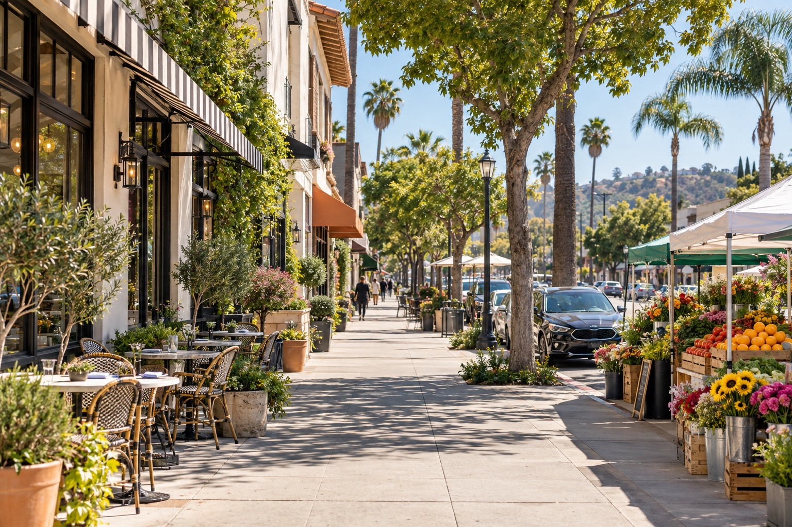

Sherman Oaks
Sherman Oaks

Studio CitySherman Oaks vs Studio City
Sherman Oaks vs Studio City, the honest answer
If you want a quieter, closer-in rhythm where neighbors actually know each other, Sherman Oaks is your pick. If you want serious food culture, a Sunday market ritual, and a boulevard in the middle of one of the Valley's biggest investment stories right now, Studio City has the edge. The two sit right next to each other in the southern San Fernando Valley, and both trade the concentrated "scene" of Silver Lake or Los Feliz for something calmer, they just express that calm differently.
The useful differences, side by side.
Start here, then decide which rhythm sounds more like yours.
Swipe to compare
| What matters | Sherman Oaks | Studio City |
|---|---|---|
| Walk Score | 62 / 100 overall | 65 overall, up to 93 right around Ventura Boulevard |
| Market day | Tuesday, 2–6pm, Westfield Fashion Square | Sunday, Ventura Place |
| Neighborhood spine | Ventura Boulevard, with ranch and midcentury homes on the streets behind it | Ventura Boulevard, specifically the stretch known as Sushi Row |
| Named | 1927, after General Moses Hazeltine Sherman | 1927–28, grew up around the studio Mack Sennett built there |
| Real estate story right now | Established, settled community feel | $300M+ already visible in development (Harvard-Westlake River Park, Sportsmen's Lodge redevelopment), plus a proposed $1B Radford Studio Center modernization |
Food and daily life
Sherman Oaks and Studio City share Ventura Boulevard as their spine, but the boulevard reads differently in each. In Sherman Oaks, it's Crèma, Anajak Thai, Petit Trois Le Valley, Sweet Butter Kitchen, Pizzana, and Didar Kitchen, an easy rotation of neighborhood standbys. In Studio City, that same street becomes Sushi Row, home to Teru Sushi (open since 1979) and the birthplace of the crispy rice with spicy tuna now served at Sushi Katsu-ya locations worldwide. If your ideal week revolves around a rotating neighborhood dinner spot, Sherman Oaks. If it revolves around a genuine food destination, Studio City.


Getting over the hill
Both neighborhoods put you one canyon road from the other side of LA, but they lean different directions. Sherman Oaks' main routes south, Coldwater Canyon and Beverly Glen, run toward Beverly Hills and West Hollywood; with clear roads, Coldwater Canyon to Chateau Marmont runs about 15 minutes. It's the Bel Air-adjacent side of the hill. Studio City sits right at the mouth of Cahuenga Pass, the direct route straight into Hollywood, no canyon detour required, with Laurel Canyon Boulevard as its own separate route south. Same hill, different side of it.
Those same canyon roads double as your closest trailheads. Sherman Oaks backs up to Deervale-Stone Canyon Park, a roughly 79-acre nature park tucked into the hills. Studio City sits at the base of Wilacre Park and Fryman Canyon, reached off Laurel Canyon and Mulholland, with a well-used loop trail connecting the two.


What's actually being built right now
This is the real differentiator most people miss. Studio City has a documented wave of investment moving right now: the Harvard-Westlake River Park (a $200 million, 16-acre athletic campus nearing completion on the former Weddington Golf site), the completed Shops at Sportsmen's Lodge redevelopment, a proposed 814-unit Riverwalk development, and a proposed $1 billion modernization of the Radford Studio Center lot. Sherman Oaks doesn't carry an equivalent active development story in the same way, its value proposition is the settled, established neighborhood feel it already has. Buyers thinking about long-term change in the area should weigh that difference directly.
Schools
Both neighborhoods sit within LAUSD, with private options nearby. Sherman Oaks includes Kester Avenue Elementary (10/10 GreatSchools), Sherman Oaks Elementary Charter (8/10), Louis Armstrong Middle School (6/10), and Van Nuys High School (8/10), plus The Buckley School and Notre Dame High School as private options. Studio City includes Carpenter Community Charter, Walter Reed Middle School, and North Hollywood High School, plus Harvard-Westlake as a private option. As always, verify any specific address through the LAUSD School Directory, since assignments depend on the exact property.
Still deciding between the two? I've got you.
Whichever way you're leaning, I can walk both neighborhoods with you block by block until it's obvious.
Let's start here